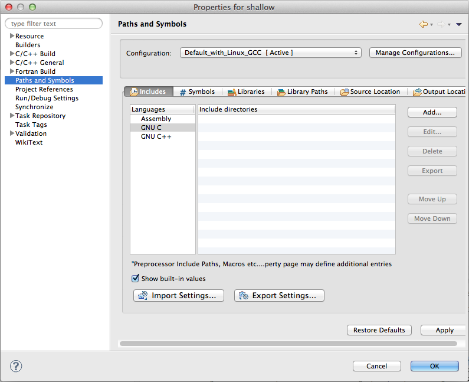
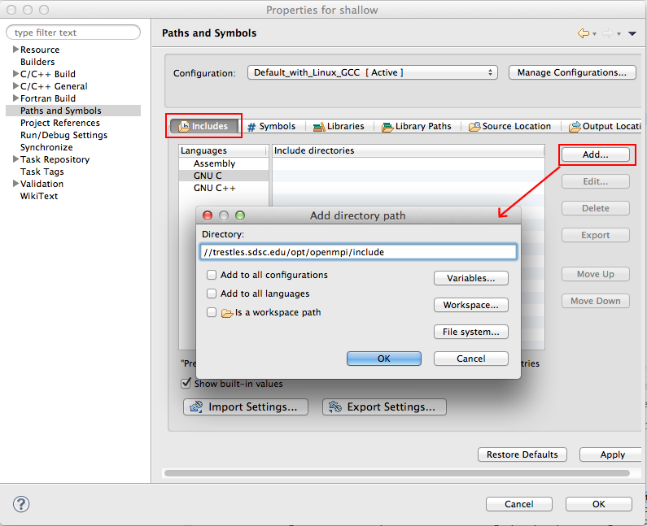
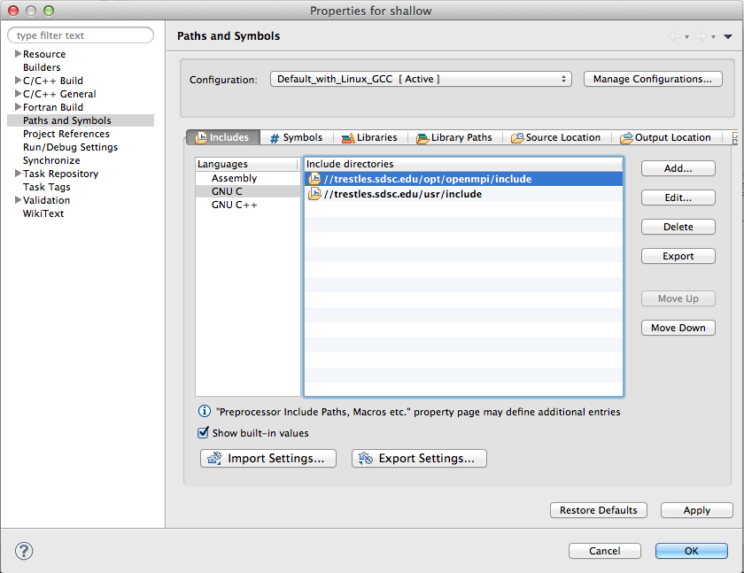
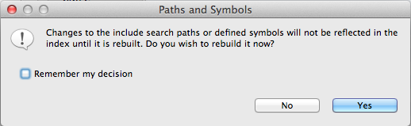
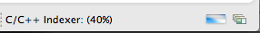
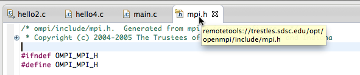

Include files for Synchronized Projects
There are several places where include files are important
to the editing, analyzing, building, and running of your program.
A Synchronized Project mirrors the source files on the local machine as well as the
remote target machine. Usually you edit locally, but build and run on the remote target.
So this complicates things with respect to include files.
- Local: Eclipse can use include files to provide information about
APIs in the editor, via hover-help, for example. Macro definitions also can be established via include files.
The header files within your project are synchronized to the local machine and will be found by Eclipse.
Having correct include files available (for system and library includes) can prevent
Codan (C/C++ Code Analysis in CDT)
from flagging potential errors incorrectly.
(Codan analysis can also be turned off if this is preferable. See above link.)
- Build: the remote system will use its own paths, environment management, etc
for this. The Eclipse settings don't matter for this.
Your local environment (where Eclipse is installed) may not have the same set of system and library include
files that your program should be built with.
So you may want to tell Eclipse where the remote files are.
- There's nothing wrong with having your eclipse project Paths and Symbols point
at local include paths for system and library include files so that hover help, Codan, etc., will resolve to something
useful. These aren't used for the build, just to assist with Eclipse tools.
Note: In the past, other mechanisms in the project properties have worked to set remote include paths for CDT
that worked with Synchronized projects.
(There are several places that Paths and Symbols can be set.)
At the moment (Kepler release, PTP 7.0, June 2013) the following seems to work.
- Bring up Project Properties for the project (right-mouse on project in Project Explorer
and select Properties at the bottom of the context menu).
- In the Properties dialog, select Paths and Symbols on the left side.

- Make sure that the active configuration is selected at the top,
that the Includes sub-tab is selected
and that your C compiler is selected on the left side under Languages.
Select the Add... button to add an include path.
In the Add directory path dialog, you will enter a UNC-style path, using the
Remote Connection target name as the prefix, of the form:
//connection-name/path/to/includes

Enter the path, prefixed by the remote connection target name.
Add other paths if desired.
Select the OK button in the Add dialog. You will see the list of include paths you added in the list under Include directories.

- Select the OK button in the Properties dialog to close Project Properties.
- You will see a Paths and Symbols dialog asking you to rebuild the index with these new include files.
Select Yes to continue.

The indexer make take a few minutes to run, depending on the size of your program and the connection speed.
You can watch its progress in the status area in the lower right hand corner of the Eclipse workbench.

- Now, if you have added include files for all the APIs used in a file, then when you edit the file,
the Codan errors will be gone.
If you hyperlink-click (ctrl-click) on an include file name in the editor, or on an API name,
the editor will open on that (remote) include file.
You can hover over the editor tab of this file to see that it is indeed located, via the remote tools connection,
on the remote system.

Back to Top | Back to Table of Contents